Actualités
Concerts, bals, stages et week-ends : toutes les annonces de l'association, des plus récentes aux plus anciennes.
2027

2026
 Gandaia na Ponte au BakouaConcert Forro Tati Veras
Gandaia na Ponte au BakouaConcert Forro Tati Veras Le bal tempête 2027
Le bal tempête 2027 Stages de forró roots avec Simon Bagard
Stages de forró roots avec Simon Bagard Concert forró – Everton Coroné Trio
Concert forró – Everton Coroné Trio Fête de fin de saison 25-26 des Podos
Fête de fin de saison 25-26 des Podos Gros Week-end Forró avec Cristalino et Pé d’estrada
Gros Week-end Forró avec Cristalino et Pé d’estrada BAL TEMPÊTE☔️⚡️électrofolk
BAL TEMPÊTE☔️⚡️électrofolk Bal forró au Nomad Café avec Gandaia na Ponte
Bal forró au Nomad Café avec Gandaia na Ponte Concert de Saíra et stages – à Saint-Nazaire
Concert de Saíra et stages – à Saint-Nazaire Week-end forró avec Electrofaune
Week-end forró avec Electrofaune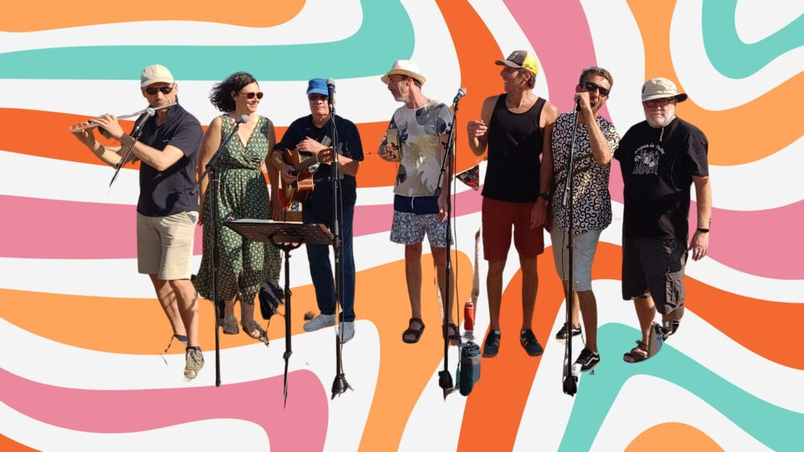
Gandaia au Quai des arts2025
 Boum forró de la nouvelle année avec DJ Cokelicô
Boum forró de la nouvelle année avec DJ Cokelicô Bal-Jam forró de Noël à Saint-Nazaire
Bal-Jam forró de Noël à Saint-Nazaire Gandaia na Ponte au Bar Bar
Gandaia na Ponte au Bar Bar Bal-brunch forró au Nomad Café
Bal-brunch forró au Nomad Café Forró Na Chuva à Saint-Nazaire
Forró Na Chuva à Saint-Nazaire Forró do domingo à Saint-Nazaire
Forró do domingo à Saint-Nazaire Pratique forró à Gambetta
Pratique forró à Gambetta Bal-Concert-Jam avec Duo Caldo de Cana et invités brésiliens
Bal-Concert-Jam avec Duo Caldo de Cana et invités brésiliens 20 sept: Gros concert forró : Alex Corrente et Lino da França, à Saint-Nazaire
20 sept: Gros concert forró : Alex Corrente et Lino da França, à Saint-Nazaire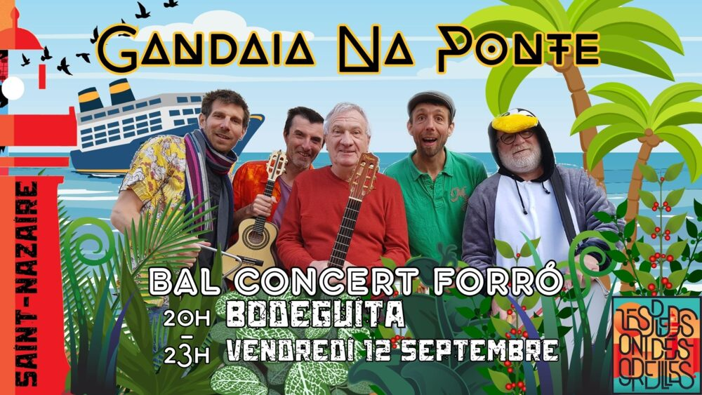
Gandaia na Ponte à la Bodeguita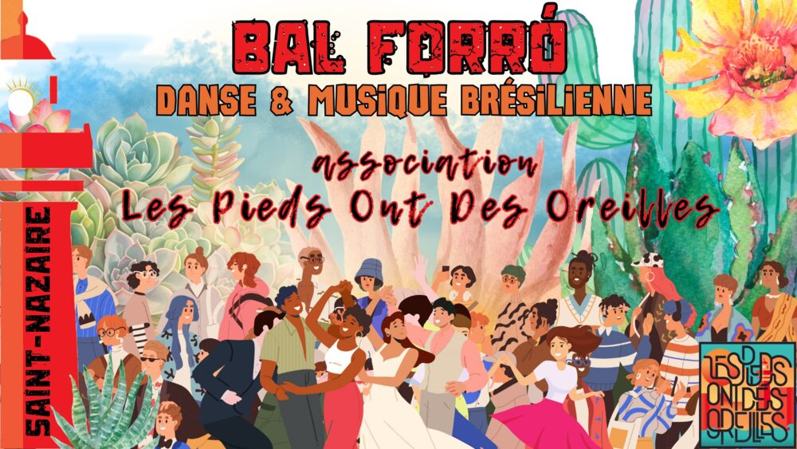
Bal forró au Commando Gandaia na Ponte aux terrasses de Méan-Penhoët
Gandaia na Ponte aux terrasses de Méan-Penhoët Bal-concert trio forró pé-de-serra au Five-Oh
Bal-concert trio forró pé-de-serra au Five-Oh Bal-concert forró, ateliers danse et musique à Saint-Nazaire
Bal-concert forró, ateliers danse et musique à Saint-Nazaire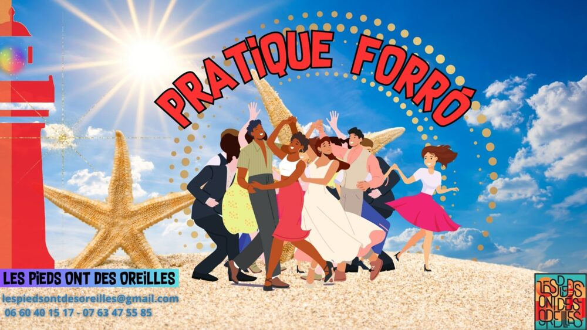
Pratique forró au Five-Oh Sambada do brasil au Kiosq
Sambada do brasil au Kiosq Les podos font la Fête de la musique
Les podos font la Fête de la musique Fête de fin de saison des Podos
Fête de fin de saison des Podos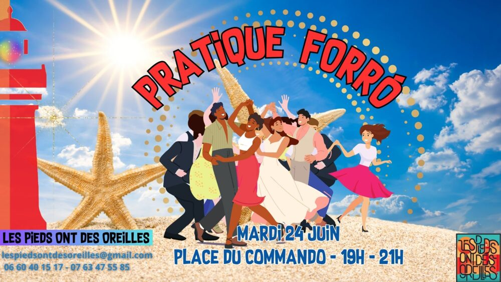
Pratique forró sur la place du Commando Gros Week-end Forró – Forrofia – Forroscopic’s – Stages – Jam
Gros Week-end Forró – Forrofia – Forroscopic’s – Stages – Jam Pratique forró sur la place du Commando
Pratique forró sur la place du Commando Gandaia na Ponte à Méan-Penhoët
Gandaia na Ponte à Méan-Penhoët Gandaia na Ponte à Commando
Gandaia na Ponte à Commando Concert Nandinho Barros à Saint-Nazaire
Concert Nandinho Barros à Saint-Nazaire Concert Carnavalesque Forró avec Baile De Rabeca à Saint-Nazaire
Concert Carnavalesque Forró avec Baile De Rabeca à Saint-Nazaire Caio 7 cordas
Caio 7 cordas Boum forró avec DJ Çaraca et stages avec Marion Lima
Boum forró avec DJ Çaraca et stages avec Marion Lima Bel Air de Forró à Saint-Nazaire
Bel Air de Forró à Saint-Nazaire2024
 Bal-Jam forró de Noël
Bal-Jam forró de Noël Concert Madame Forró à Saint-Nazaire
Concert Madame Forró à Saint-Nazaire La Sambada du Kiosq
La Sambada du Kiosq Grande tablée avec Léo Corrêa
Grande tablée avec Léo Corrêa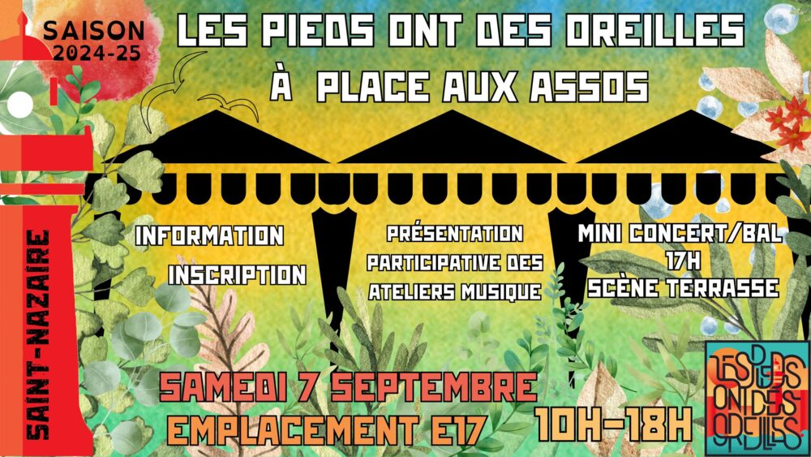
Place aux assos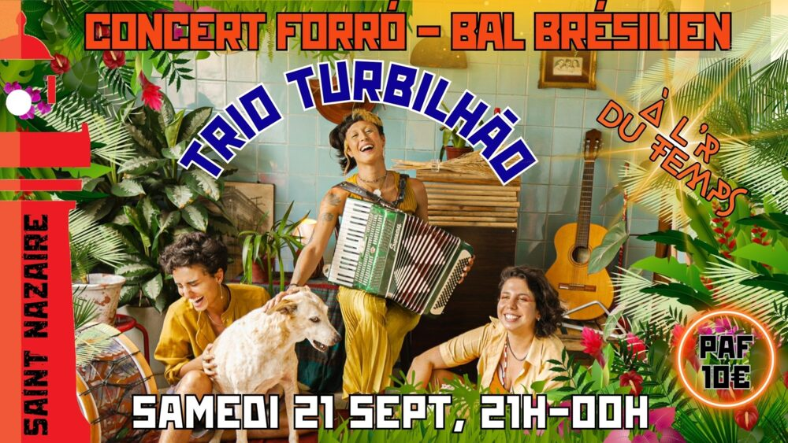
Concert du Trio Turbilhão Coletivo da Chuva
Coletivo da Chuva Portes ouvertes
Portes ouvertes Gandaia na Ponte aux terrasses de Méan-Penhoët
Gandaia na Ponte aux terrasses de Méan-Penhoët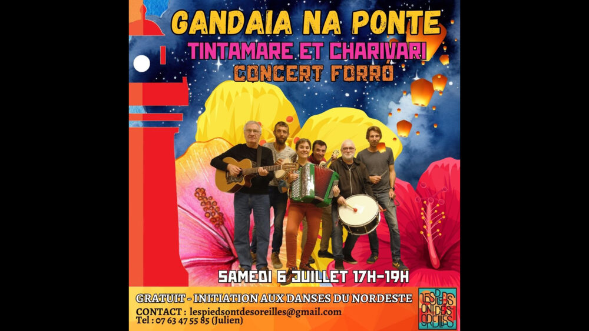
Gandaia na Ponte à Tintamarre Côté plage
Côté plage Gandaia na Ponte au Skate Park
Gandaia na Ponte au Skate Park Bal de fin d’année des podos
Bal de fin d’année des podos Sambada do Brasil au Kiosq
Sambada do Brasil au Kiosq Fête de la musique
Fête de la musique Concert Forró Lenilda Verissimo & Karine Huet à Saint-Nazaire
Concert Forró Lenilda Verissimo & Karine Huet à Saint-Nazaire Rythmes salés
Rythmes salés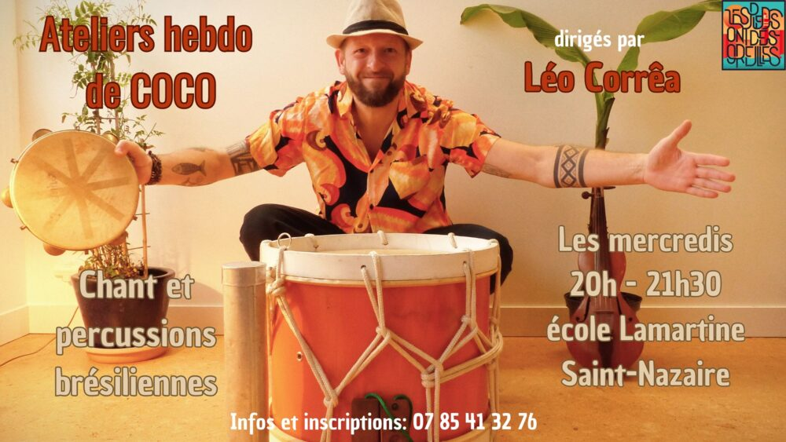
Atelier hebdo de coco Gros Week-end Forró avec Trio D2, Fernando Cavaco et Marion Lima
Gros Week-end Forró avec Trio D2, Fernando Cavaco et Marion Lima Roda do Brasil (forró/samba) avec Léo Corrêa
Roda do Brasil (forró/samba) avec Léo Corrêa Concert brésilien carnavalesque avec Léo Corrêa Baile de Rabeca
Concert brésilien carnavalesque avec Léo Corrêa Baile de Rabeca Carnaval de rue brésilien à Saint-Nazaire
Carnaval de rue brésilien à Saint-Nazaire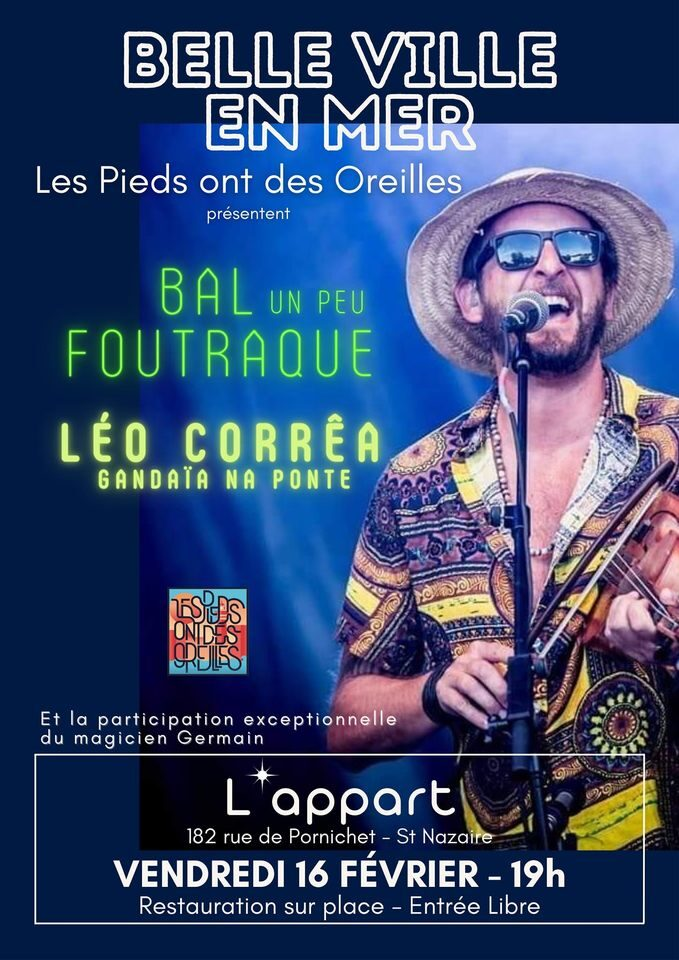
Belleville en mer : bal avec Léo Corrêa The Forroscopic’s de retour à Saint-Nazaire
The Forroscopic’s de retour à Saint-Nazaire Pour les ENFANTS :💥BOUM et ATELIERS de danses brésiliennes
Pour les ENFANTS :💥BOUM et ATELIERS de danses brésiliennes BOUM BRÉSILIENNE FORRÓ avec DJ FLOW à Saint-Nazaire
BOUM BRÉSILIENNE FORRÓ avec DJ FLOW à Saint-Nazaire2023
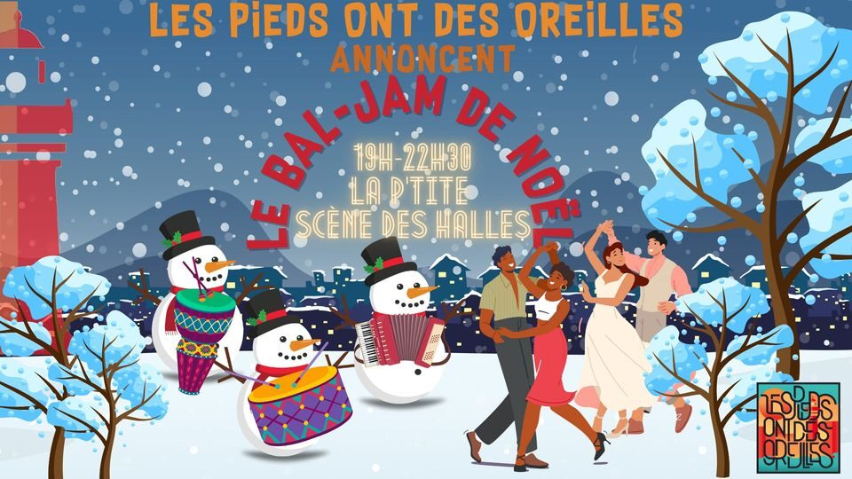
Bal-jam forró de Noël Stage de danse forró avec Madame Forró
Stage de danse forró avec Madame Forró Gros Week-end Forró avec Conterrâneos à Langon
Gros Week-end Forró avec Conterrâneos à Langon Jam session à la P'tite scène des Halles
Jam session à la P'tite scène des Halles Apéro forró Commando
Apéro forró Commando Fête des Podos (bal forró)
Fête des Podos (bal forró) Les ateliers enfants arrivent en septembre !
Les ateliers enfants arrivent en septembre ! Le gros week-end forró 2023
Le gros week-end forró 2023 Forró swing party
Forró swing party Ateliers de danse brésilienne pour enfants avec Alise
Ateliers de danse brésilienne pour enfants avec Alise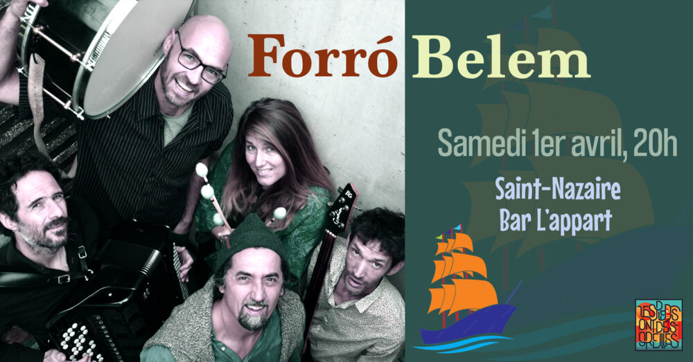
Forró Belém à L'Appart Atelier et jam avec Aline
Atelier et jam avec Aline Saíra et stages
Saíra et stages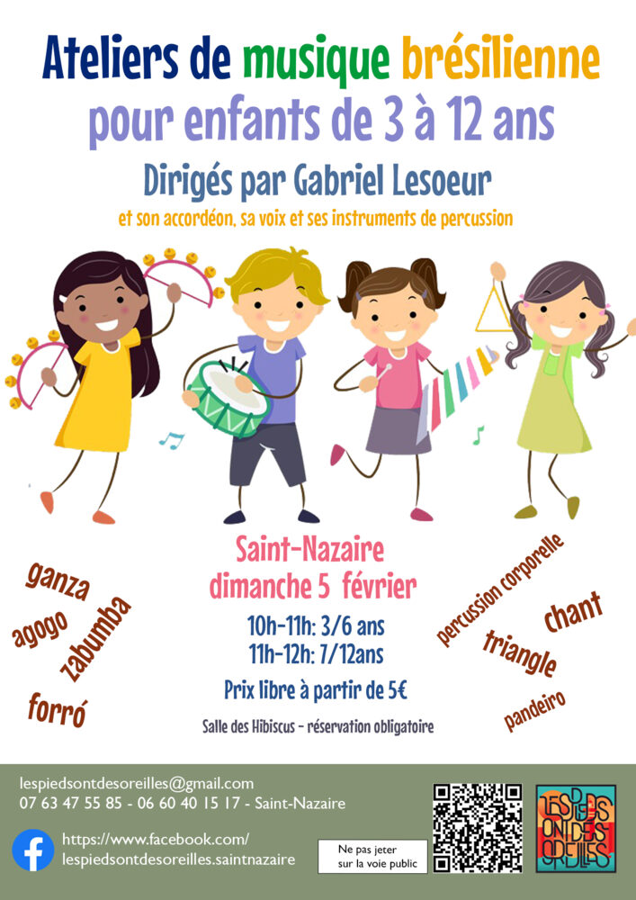
Ateliers de musique brésilienne pour enfants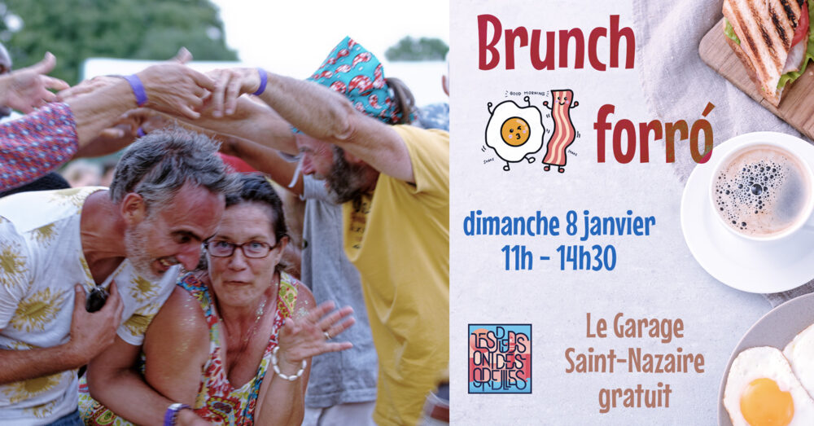
Brunch forró et ateliers avec Gabriel2022
 Pratique et jam à la P'tite scène des Halles
Pratique et jam à la P'tite scène des Halles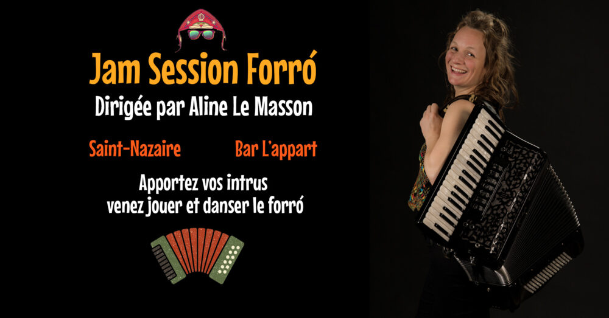
Jam session forró Gros week-end forró avec Black do Acordeon
Gros week-end forró avec Black do Acordeon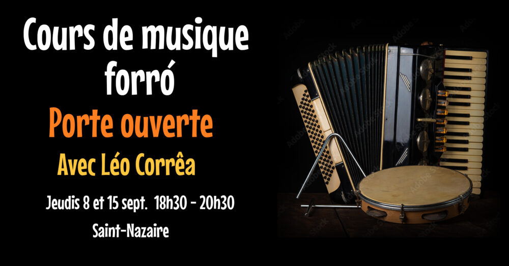
Rentrée 2022 : portes ouvertes des cours de forró Forroscopic's à la P'tite scène des Halles
Forroscopic's à la P'tite scène des Halles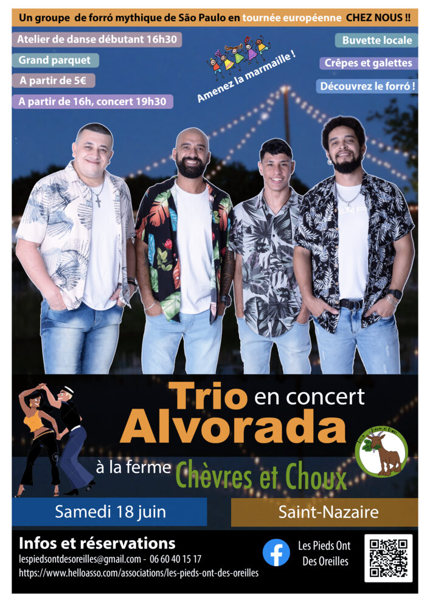
Trio Alvorada à la ferme Chèvres et Choux Rentrée 2022-23 : cours de danse et de musique forró
Rentrée 2022-23 : cours de danse et de musique forró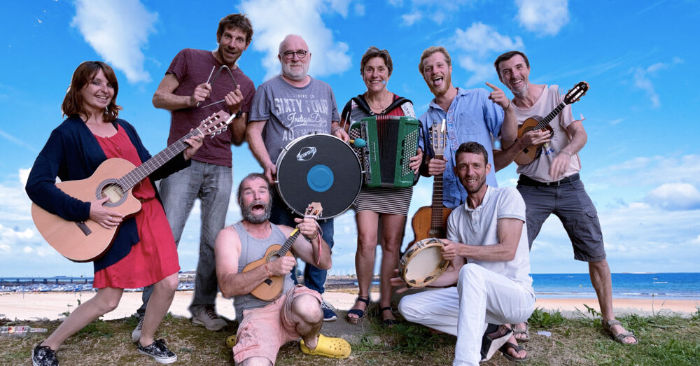
Gandaia à Pornichet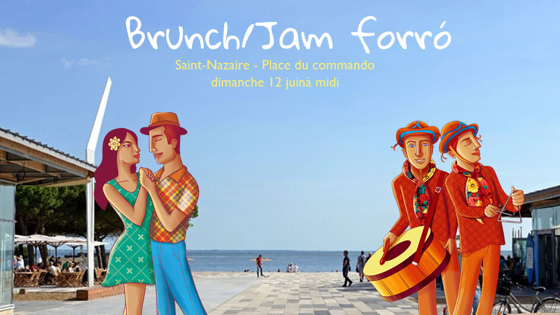
Brunch jam forró Jam session forró à L'Appart
Jam session forró à L'Appart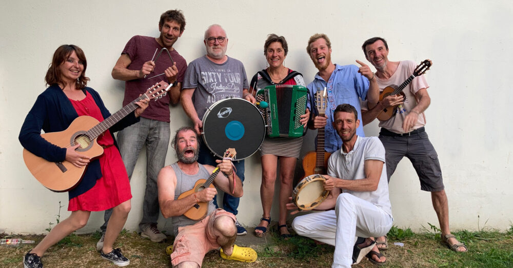
Gandaia na Ponte chez Catherine Forró da lenha
Forró da lenha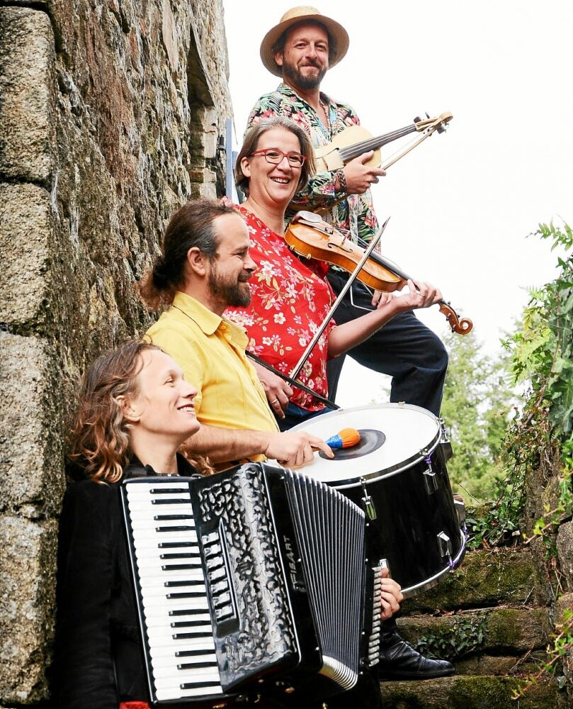
Cacau et Forró na chuva à Saint-Nazaire Cours particulier avec Marion Lima
Cours particulier avec Marion Lima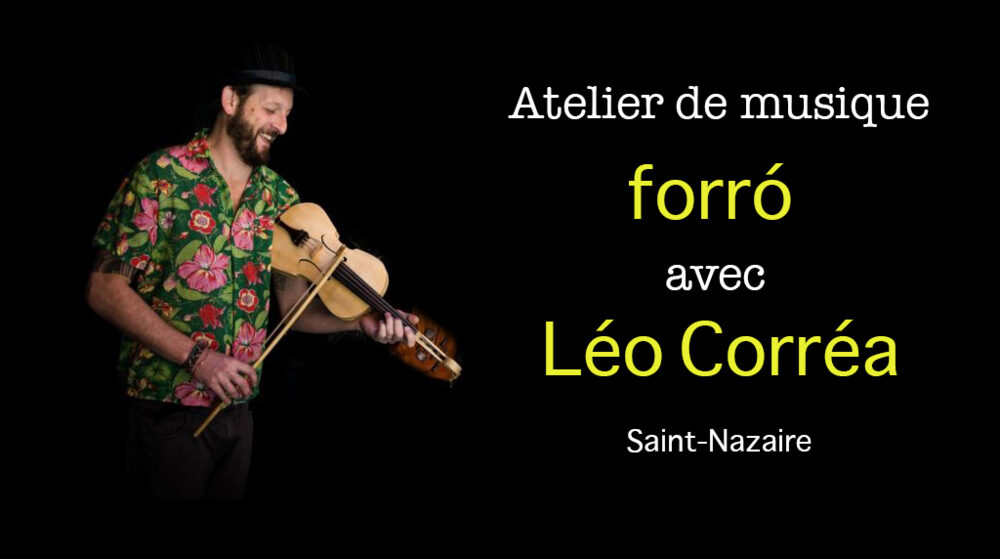
Atelier de musique forró avec Léo Corrêa Forró Belém au Quenet
Forró Belém au Quenet2021
 Forroscopic's sous les palmiers (annulé)
Forroscopic's sous les palmiers (annulé) Conterrâneos à Saint-Nazaire
Conterrâneos à Saint-Nazaire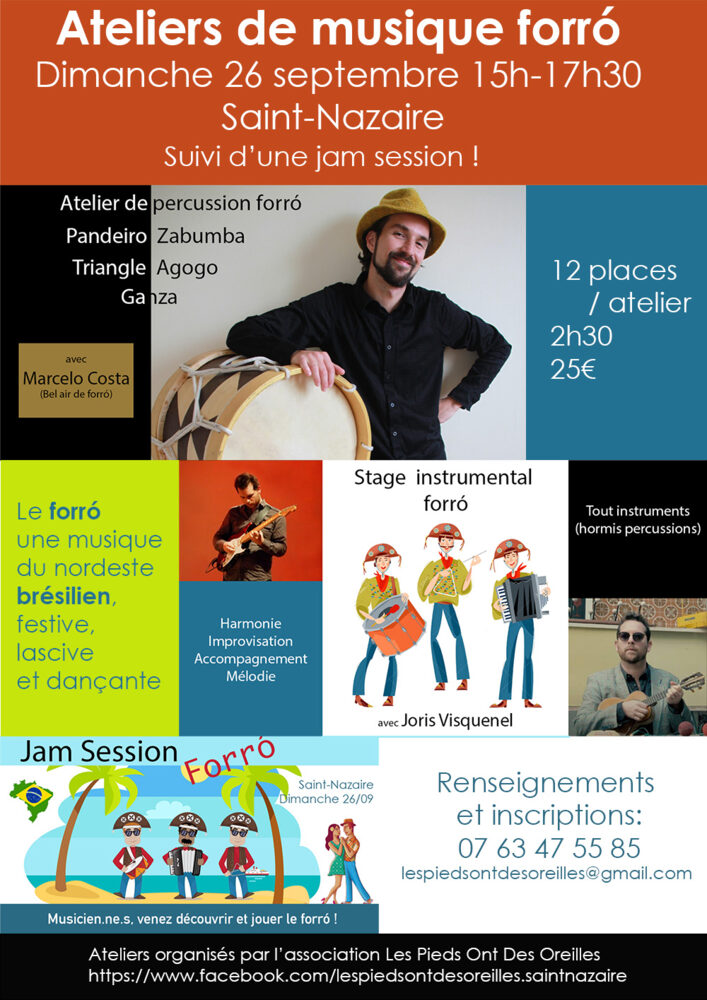
Atelier de musique forró du 26 septembre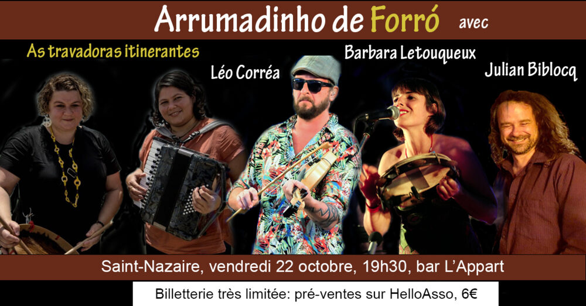
Arrumadinho de forró avec Léo Corrêa et les Trovadoras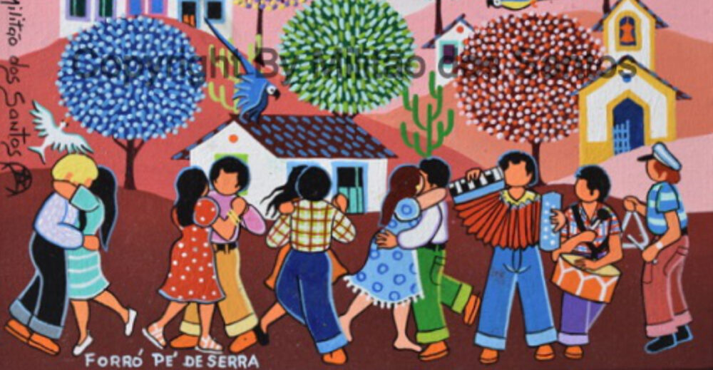
Forró pé-de-serra à la terrasse du Bois Joalland Forró na chuva à L'Appart
Forró na chuva à L'Appart Une enceinte pour le forró (crowdfunding)
Une enceinte pour le forró (crowdfunding)